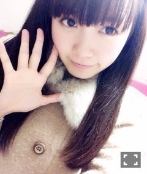
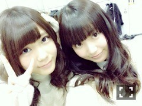
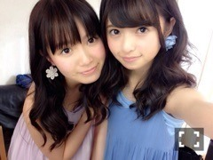

| 2015/01 22 Thu | ひめたん-OoO-その515 |
前回の日記にたくさんのコメント
本当にありがとうございました( ˇωˇ )
素直に数に驚いたのと同時に
みなさんのエールがあるから
私はこうして活動できているんだなあと
改めて感じました
半身浴しながらコメント読んでて
ひとりで号泣したのは
ここだけの話。
もしも寄せられたコメント全てを
"期待"と捉えることが許されるなら
私はひとりひとりの
言葉に、期待に応えたい
どうか見ていてください！
＼ばあ♡／

さて、報告遅くなりましたが
日曜日は横浜個別握手会でした！
来てくださったみなさん
楽しい時間をありがとうございました
お留守チームのみなさんおまたせ～

1部 ストレートおろし巻き
2部 ハーフツインもどき

3部 片っぽだけくるくるってやつ
4部 ツインテール
2015年初めての握手会。
新年のご挨拶と一緒に
これからも応援してるよ！と
あたたかい言葉を頂きました♡
握手会は久々だったけれど
きゅんきゅん王国のみなさんに
会えてよかった（＾ω＾）
もちろんはじめましての方や
ちょっと気になって来たよ～なんて方も
いらっしゃって嬉しかったです！
やっぱり顔見てお話すると
元気になりますね
安心するというか。
ひめは頑張るぞー！

いくちゃんの生誕祭で
お手紙を読ませていただきました！
いつもは恥ずかしくて
なかなか言えない気持ちも
お手紙で伝えることができて
生誕委員の皆様には本当に感謝です。
いつまでも仲良くしてね（ ˆoˆ ）♡
いくちゃんらしさたっぷりの
愛に溢れた生誕祭でした
ドレス綺麗だった～
さあそして
グラビアザテレビジョン
発売中です！
あすかりんとのペアグラビア
撮っていただきました♡
ブルーとピンクのワンピースで
ふたりでくっついてるカットが
私はお気に入りです
イヤリングもいい感じでしょ(〃ω〃)
インタビューもしっかり2P載ってます
ふたりとも結構深いところまで
お喋りしてるかも
いくちゃん、なーちゃん、みおちゃん
も載ってるよ～


最後に、
橋本・高山・中元
チーム福岡のオンエア情報！
ラジオ
◆1月31日(土) ＲＫＢラジオ「HKT48のももち浜女学院」23：00～ インタビューＯＡ予定
◆2月7日(土) ＦＭ福岡 「TREASURE TIMES」20:00～20:25 番組内にてコメントＯＡ予定
テレビ
◆1月19日(月) ＫＢＣ「ドォーモ」24:15～25:10 ＯＡ
◆1月22日(木) ＴＮＣ「ＧｅｅＢｅｅ」24:35から ＯＡ
◆2月8日(日) ＦＢＳ「ナイトシャッフル」22：30～ OA予定
雑誌
◆福岡ウォーカー 2月20日発売3月号掲載
◆1月31日(土) ＲＫＢラジオ「HKT48のももち浜女学院」23：00～ インタビューＯＡ予定
◆2月7日(土) ＦＭ福岡 「TREASURE TIMES」20:00～20:25 番組内にてコメントＯＡ予定
テレビ
◆1月19日(月) ＫＢＣ「ドォーモ」24:15～25:10 ＯＡ
◆1月22日(木) ＴＮＣ「ＧｅｅＢｅｅ」24:35から ＯＡ
◆2月8日(日) ＦＢＳ「ナイトシャッフル」22：30～ OA予定
雑誌
◆福岡ウォーカー 2月20日発売3月号掲載
よろしくお願いします( ﹡ˆoˆ﹡ )
チェックしてくれたひとは
感想待ってるよ～＊
 福岡で自由な時間って
福岡で自由な時間って
なかなか取れなかったと思うけど、
行きたかった場所とかある？
スペースワールド♡
あとおみやげもじっくり見れたら
よかったなあ～(´｡･v･｡｀)
次行った時こそは......
ひめたんはカラオケにひとりでも
行けるタイプなの？
カラオケはひとりでも
行けるんだよね～
でもひとりだと歌いながら
次の曲探したりして大変だから
何人かと行きたいです！
やっぱりひめたんが
1番好きなサンリオのキャラクターって
ぼんぼんりぼんちゃんなのー！？
うん♡ぼんぼんりぼんちゃん♡
マイメロちゃんも好き\( ˆoˆ )/
にらめっこ得意ですか？？
ひめたんすぐ笑っちゃいそう
苦手です。その通り。
向き合っただけでクスッてなっちゃう
あと沈黙に耐えられないタイプ。
ひめたんの日記の
コメント欄下２ケタに46を踏んだ方へ
手書きでコメ返するコーナー
＼ ひめたん46 ／

いつもたくさんのコメント
ありがとうございます
11thシングルは
3/18に発売することが決定しました！
乃木坂46の新たなスタートとなる
シングルになると思います
頑張るので応援よろしくね☆
センター試験お疲れ様でした！
(＊´・ω・＊)
コメント(1004)
2015/01/22 23:36